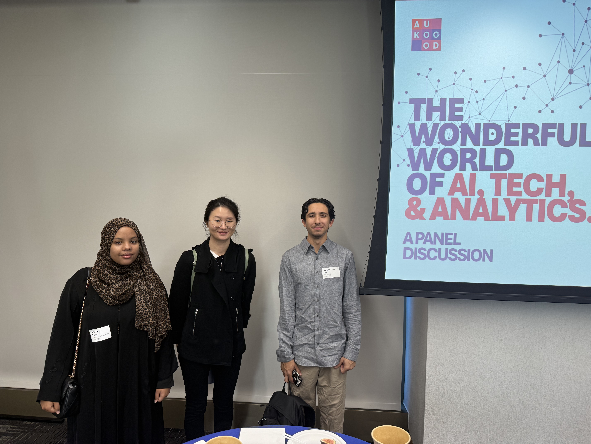

From Insight to Action: Lessons from NVIDIA GTC 2025 Student Experience
Reflections from the NVIDIA GTC 2025 Student Experience — key lessons from alumni, career panels, and Jensen Huang’s keynote on “AI on RAM.” How this event reshaped my understanding of critical thinking and career growth in the AI era.